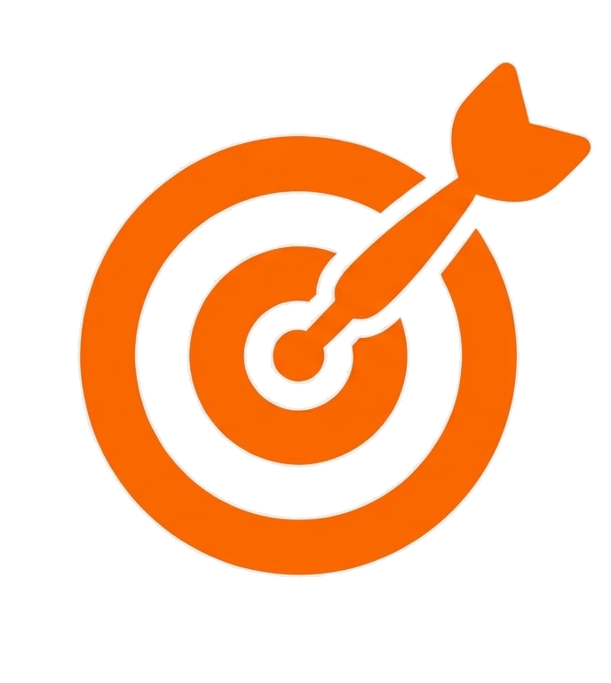
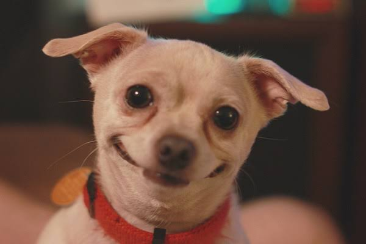

Nossos Objetivos
Nossa missão
Resgatar, cuidar e encontrar lares amorosos para cães em situação de abandono, promovendo o bem-estar animal e uma sociedade mais consciente e solidária.

Nossos objetivos
- Resgatar cães em situação de rua.
- Oferecer cuidados veterinários e alimentação.
- Promover a adoção responsável.
- Conscientizar sobre o bem-estar animal.
